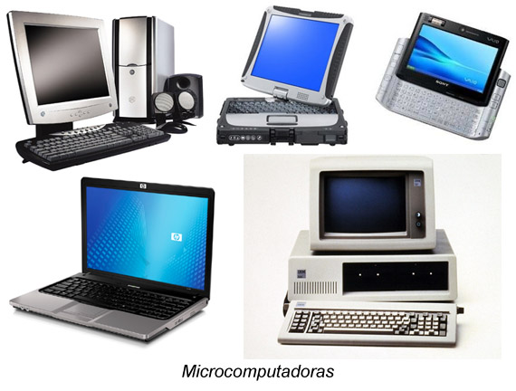

Un computador portátil o laptop es un equipo personal que puede ser transportado fácilmente. Muchos de ellos están diseñados para soportar software y archivos igual de robustos a los que procesa un computador de escritorio. Dado que los portátiles se han diseñado para ser transportados fácilmente de un sitio a otro, hay algunas ventajas y diferencias importantes con los computadores de escritorio: Todo en uno: Un portátil tiene todo. Es decir, todo el sistema está integrado: monitor, teclado, touchpad (que sustituye al ratón), altavoces y cámara. Independencia: Es completamente funcional incluso cuando no hay periféricos conectados a él. Es más rápido de instalar y hay menos cables para conectar. Accesorios: También tienes la opción de conectar un ratón normal, un monitor más grande y otros periféricos. Adaptabilidad: Esto, básicamente, convierte tu portátil en un ordenador de mesa, con una diferencia principal: puedes desconectar fácilmente los periféricos y llevar el portátil donde quieras. partes de un portatil Touchpad tambien conocido como trackpad, es una almohadilla sensible al tacto que permite controlar el puntero al hacer movimientos con tu dedo. Muchos touchpads incluyen gestos multitoque que llevan a cabo tareas específicas haciendo gestos con uno o más de un dedo. Batería Cuando conectas la batería a la toma de corriente y a su vez al portátil, éste se recarga. Otro de los beneficios de contar con una batería es que tienes energía de reserva de no contar con electricidad. Cada portátil cuenta con una batería que, mientras esté cargada, te permite usarlo sin necesidad de estar conectado. adaptador CA Un portátil, por lo general, tiene un cable de alimentación especializado. Está diseñado para ser utilizado con este tipo de equipos. Algunos de estos cables utilizan conectores magnéticos que se desconectan fácilmente y, con seguridad al desconectarse bruscamente del computador, no se provocarán accidentes graves al equipo en caso de tropezar con ellos. Esto también ayuda a evitar daños a los cables. Puertos La mayoría de portátiles tienen puertos de conexión iguales a los computadores de escritorio, así como lo es el puerto USB, el conector de los auriculares o la conexión Ethernet, aunque en menor número para ahorrar espacio. Algunos puertos pueden ser diferentes y es posible que necesiten un adaptador para poder usarlos.